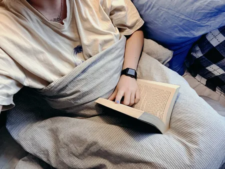
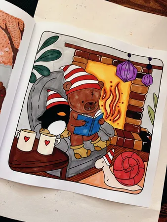
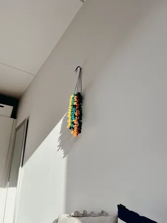
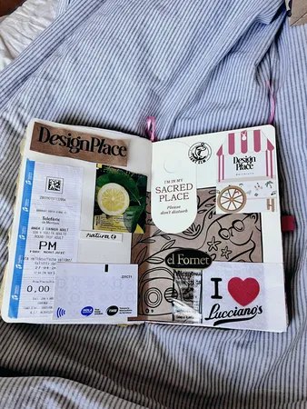
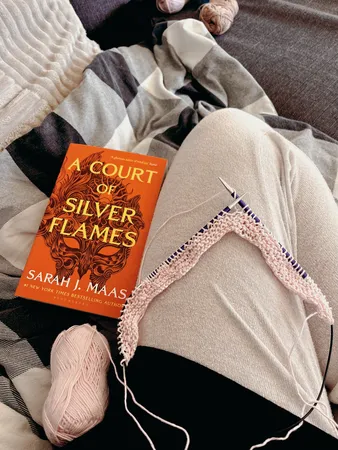

Hero Section
Hobbies
Why are they important and what can you do?
Hobbies aren’t just a way to pass the time—they’re essential for a balanced and fulfilling life. Whether it’s painting, hiking, cooking, or playing music, hobbies give you space to recharge, express creativity, and explore new interests outside of daily responsibilities. They can reduce stress, boost mental well-being, and even help you build meaningful connections with others who share your passions. In a fast-paced world, making time for what you love isn´t a luxury—it’s a necessity.

My personal favorites:



